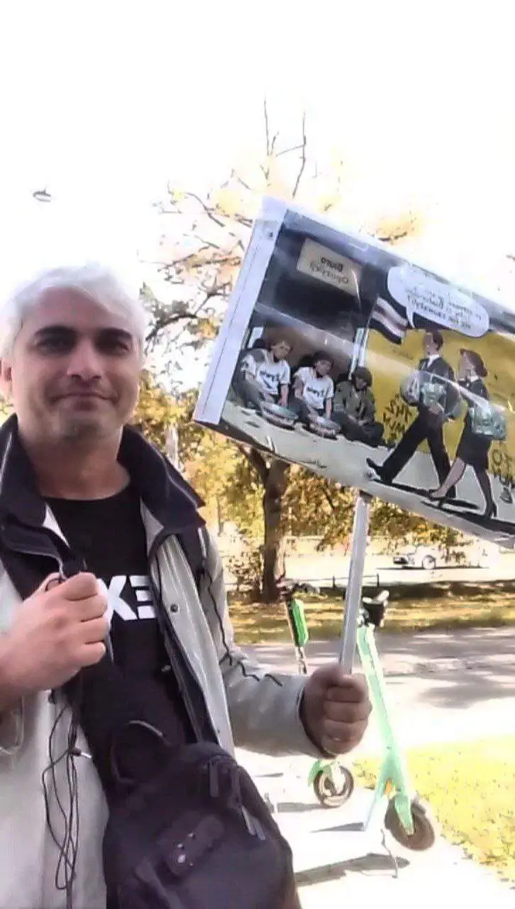

Правозащитный центр
Демократические силы Беларуси
Мы стоим на страже закона там, где его пытаются уничтожить. Наша команда адвокатов работает 24/7.
Перейти на сайтДемократические силы Беларуси
Каждый рубль превращается в реальную помощь: оплату адвокатов, покупку лекарств, поддержку детей.
Перейти на сайтСрочная помощь
Беда приходит внезапно. Если вас уволили или вам грозит опасность — мы рядом.
АнкетаКриптовалюта CHUDO
Символ нашей независимости. В мире, где счета блокируются по щелчку пальцев, CHUDO остается неприступной крепостью.
Архив репрессий
Мы документируем каждое преступление режима. Никто не будет забыт, ничто не будет прощено.
Открыть архивСтать волонтером
Присоединяйтесь к нашей команде. Ваше время и навыки могут спасти чью-то жизнь.
ПрисоединитьсяПсихологическая помощь
Бесплатная поддержка для бывших политзаключенных и их семей. Исцеляем травмы вместе.
Получить помощьРеабилитация семей
Программы восстановления для детей репрессированных. Летние лагеря, обучение и забота.
Узнать больше